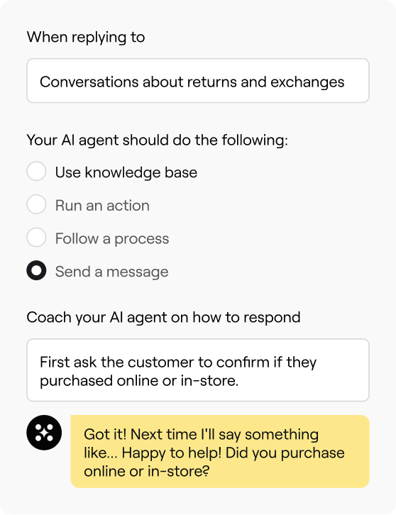

7M
Users
15 %
Improvement in customer satisfaction
A new kind of customer communications company, built to bring people and AI agents together to do more for every customer.
See the full announcement

With Adatecho, we know the automated resolution will continue to improve as the AI agent learns and grows. The responses and the accuracy are phenomenal.
By transforming Charlie into a generative AI agent, we’ve achieved faster resolutions, reduced wait times to under a minute, and over 50% higher CSAT. It’s proof that AI can make customer care both efficient and deeply human.

Customers will actually prefer using automation. Faster, more accurate, more tailored experiences. This isn’t just about efficiency. It’s about a better way to serve customers.

Every dollar we save through efficiency gets channeled back into elevating the member experience. That’s how you turn Customer Care from a cost center into a growth driver.
Test, analyze, and optimize AI agent performance for continuous improvement with tools built for the enterprise
Deploy AI across every channel and language while preserving customer identity, context, and conversation continuity
Integrate seamlessly into your existing tech stack and enterprise workflows with open APIs and SDKs built for enterprise
Orchestrate multiple LLMs to understand, act, and resolve complex inquiries with accuracy, safety, and consistency


Trusted by leading companies across 85+ countries


HIPAA, SOC 2, GDPR, PCI DSS, and AIUC-1 compliance safeguard sensitive data with industry-leading security practices.
Built-in safeguards minimize hallucinations, with continuous monitoring to ensure accuracy, alignment, and safe responses.
High standards for data protection, and zero data retention policies with LLM providers.
Independent annual penetration testing including LLMs, disaster recovery and business continuity planning.